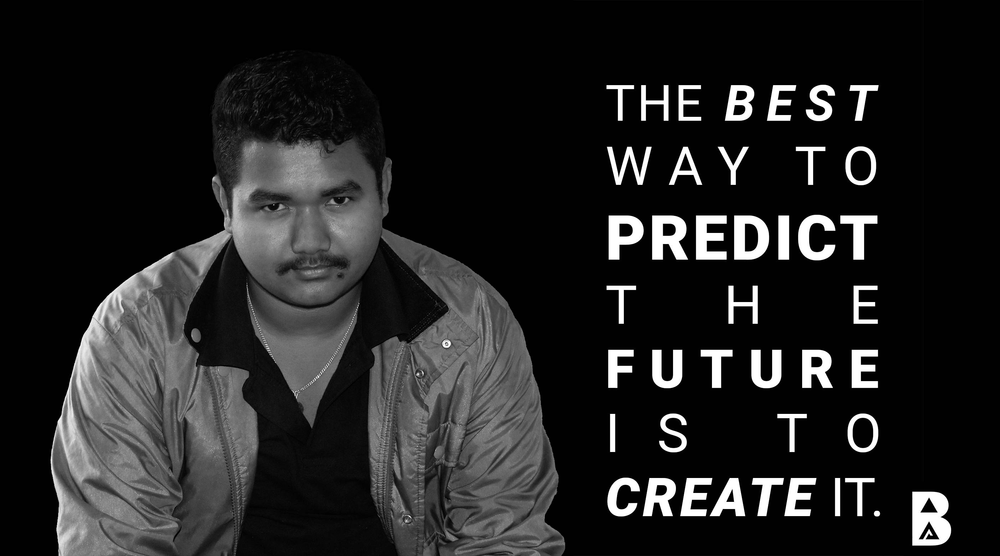

Web Developer | Programmer.
I am Biju Acharju, a resident of Sunsari, Nepal. I am a student of Ithari International College taking undergraduate three years course of Bsc (Hons) Computing. To be honest, I am a technological enthusiast especially in the field of web and application design and development. And I love to use the latest trend of design in my work.
I provide amazing designs for webpages to my clients. With my graphics designing skills, using photoshop I can provide the designs to my clients as per their requirement. You can hire me for the design you need for your website.
I can provide excellent video collaboration to my clients respective to video clips provided. Using Adobe Premiere Pro with my innovative ideas, I produce promotional and intro videos. You can contact me for some awesome videos.
With my knowledge and the skill, I can develop responsive websites from scratch and using frameworks like bootstrap. I can develop the website for my clients as per their requirements. I specialize in front-end web development.